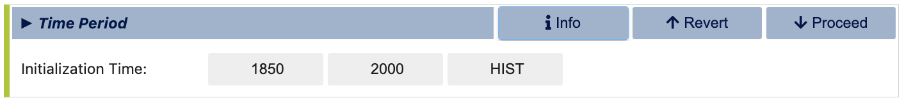
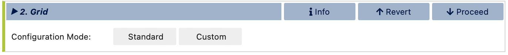
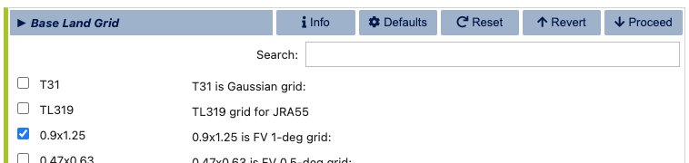

Ridge World
This example provides step-by-step guidance on generating a coupled idealized configuration consisting of an aquaplanet with polar land caps and a narrow land ridge extending between the two poles. This setup is similar to the configuration used in Wu et al (2021) . The example demonstrates how to use the visualCaseGen GUI to select CESM components, configure custom ocean and land input files, and set up the final case.
Unlike standard CESM cases, this example involves significant modifications, including customizations to the ocean grid, bathymetry, and land surface properties.
Note
A video demonstration of this example is available at this link.
Stage 0: Open visualCaseGen
Follow the instructions in the Opening the GUI to open visualCaseGen in your Jupyter notebook environment.
Stage 1: Select Compset
After having executed the cell with the command from visualCaseGen import gui; gui, and clicking the Start button, you will see the main interface of visualCaseGen.
Click the Custom button to proceed with creating a custom compset for our idealized Ridge World configuration.
Initialization time
Once the Custom button is clicked, you will be prompted to select the initialization time. For this example, select 1850 as the initialization time.
Models
Once you’ve selected the initialization time, visualCaseGen will prompt you to select the models for each component class. For this ridge world case, select the following component options: cam as the atmosphere; clm as the land component; cice as the ice component; mom as the ocean component, srof (i.e., stub run off) as the river component; sglc (i.e., stub land ice) as the land ice component; and, swav (i.e. stub wave) as the wave component. After all the selections are made, the model matrix should look like:

Model Physics
Having selected the models, you will proceed to select the physics options for each model. The physics settings determine the complexity of each model component and impact computational requirements. For this example, select the following physics options which are based on the selections made in Wu et al (2021) :
Component Options (Modifiers)
You are now ready to finalize the compset by selecting optional physics modifiers. Navigate between tabs for each component options to select the desired options. For this example, select (none) for all the components except for the clm component, which should be set to the satellite phenology (SP) mode. This options enables various aspects of the land model such as leaf-area index are prescribed as opposed to being prognosed interactively by the land biogeochemistry.
Stage 2: Grid
Having completed the compset configuration, you will now proceed to the Grid stage. This can either be a “Standard” grid, i.e., a ready-made grid that comes with CESM, or a “Custom” grid where you can mix-and-match existing model grids or create new ones.
Select the Custom grid option to be able to mix-and-match an existing atmosphere grid with a custom ocean grid and a modified land grid.

When the Custom button is clicked, you will be prompted to specify a directory where the grid files will be stored and a new, unique grid name, .e.g., myRidgeGrid for this example.

Atmosphere Grid
After selecting your grid directory and assigning a name, click the “Select” button to initiate the process of constructing your new grid. You will do this by individually selecting the grids for the atmosphere, ocean, and land. First, you will be prompted to select the atmosphere grid. Note that, unlike the ocean and land grids, the atmosphere grid is not customizable within visualCaseGen. Therefore, you must select from the pre-existing options. For this example, choose the standard 1-degree resolution grid: “0.9x1.25.”

Ocean Grid
For the MOM6 model grid, you have the option to either use a standard grid or create a custom grid. For this example, select the Create New option the create a custom, idealized MOM6 grid.

Selecting the Create New option will prompt you to specify several high-level grid properties as shown below. Notice the Regional and Zonally Reentrant options are crossed out. You can click on these options to view a message explaining why they are currently unavailable.

For the remaining grid properties, configure them as follows: specify 360 cells in the x-direction and 180 cells in the y-direction. Set the total grid length to 360 degrees in the x-direction and 180 degrees in the y-direction. This will result in a 1-degree lat-lon grid. Note that the grid length refers to the total extent of the grid across all cells, not the size of an individual cell. Finally, assign a unique name to your custom ocean grid.

After specifying all ocean grid parameters, click the green Launch mom6_bathy button. This will open an auto-generated Jupyter notebook where you can further customize the ocean bathymetry and generate all necessary grid input files.
The mom6_bathy tool
Important
If the mom6_bathy notebook doesn’t open automatically, make sure that your browser allows pop-ups from visualCaseGen. If the notebook still doesn’t open, you can manually launch it by navigating to the mom6_bathy_notebooks/ directory in your visualCaseGen installation and opening the notebook corresponding to your custom grid.
Once the auto-generated mom6_bathy notebook is open, you will see a series of cells that guide you through the process of creating your custom ocean bathymetry. Before proceeding, make sure that the appropriate kernel is selected in the top right corner of the notebook. Then, execute the first two cells to import the necessary libraries and to instantiate the Grid object. Notice that the Grid object is initialized with the parameters you specified in visualCaseGen.

The third section of mom6_bathy is where a custom bathymetry may be defined. The default option is to produce a flat ocean bottom of depth 2000m. We are going to instead generate an ocean that resembles the ridge world case of Wu et al (2021) , which has a depth 4000m with some sinusoidal fluctuations, a land ridge of width 1 degree longitude and the furthest poleward 10 degrees latitude at the poles set to land. We will specify this analytically with python code within mom6_bathy.
First, instantiate the topo object by running the cell below. Note that the min_depth parameter, which is set to 10.0m by default determines the minimum bathymetric depth for a cell to be considered ocean. Cells with depths less than this value will be masked as land.
# Instantiate the bathymetry object
topo = Topo(grid, min_depth = 10.0)
Once the topo object is created, remove the contents of the cell below where the bathymetry is by default set to a flat ocean of depth 2000m.
# Set the bathymetry to be a flat bottom with a uniform depth of 2000m
topo.set_flat(D=2000.0)
Replace the content of the above cell with the following code to set the bathymetry to the ridge world configuration:
# Adding in the bathymetry resembling that in Wu et al (2021)
import numpy as np
# Setting up the 2-Dimensional longitudes and latitudes of the grid
i = grid.tlat.nx.data
j = grid.tlat.ny.data[:np.newaxis]
x, y = np.meshgrid(i,j)
# Setting up the 4000 m ocean with sinusoidal fluctuations of 500 m height
custom_depth = 4000. + 400. * np.sin(x*np.pi/20) * np.cos(y*np.pi/20)
# Set up the ridget at 50 east:
custom_depth[:, 50]= 0.
# Set up polar land caps
custom_depth[0:10,:] = 0.
custom_depth[-10:,:] = 0.
# Update the depth attribute:
topo.depth = custom_depth
Once the above code is executed, you will have set up the 4000 m deep option, with sinusoidal fluctuations and set the depth of the ocean to 0 at all latitudes at 50 degrees east and at all longitudes over the 10 degrees latitude range at the poles. You can plot the bathymetry to see the results by running the cell below:
Vertical Grid
Next, you will need to set up the vertical grid. In the mom6_bathy notebook, a default vertical grid is provided, which consists of 20 layers, and a ratio of 10, which means that the thicknesses of layers gradually increase with depth, and the thickness of the bottom layer is 10 times thicker than the top layer.
# Create a vertical grid
vgrid = VGrid.hyperbolic(
nk = 20, # number of layers
depth = topo.max_depth, # Do NOT modify this argument
ratio = 10.0, # ratio of top to bottom layer thicknesses (=1.0 for uniform layers)
)
print('layer thicknesses:', vgrid.dz)
Save all grid input files
Finally, run the cell below to save all the grid input files. These include the MOM6 supergrid, topography, and vertical grid files (needed by MOM6), CICE grid file (needed by the sea ice model), and the ESMF mesh file (needed by the CESM coupler).
Warning
The paths specified in the cell below are for illustrative purposes only. Do not modify the paths in your auto-generated mom6_bathy notebook. The paths are unique to the user’s system and should not be changed, since doing so will prevent visualCaseGen from confirming that the grid files have been successfully generated and will prevent configuring CESM accurately.
# Do NOT modify this cell!
# MOM6 supergrid file.
grid.write_supergrid(f"/Users/altuntas/projects/scratch/myRidgeGrid/ocnice/ocean_grid_my1deg_grid_f2343a.nc")
# Save MOM6 topography file:
topo.write_topo(f"/Users/altuntas/projects/scratch/myRidgeGrid/ocnice/ocean_topog_my1deg_grid_f2343a.nc")
# Save MOM6 vertical grid file:
vgrid.write(f"/Users/altuntas/projects/scratch/myRidgeGrid/ocnice/ocean_vgrid_my1deg_f2343a.nc")
# CICE grid file:
topo.write_cice_grid(f"/Users/altuntas/projects/scratch/myRidgeGrid/ocnice/cice_grid.my1deg_grid_f2343a.nc")
# Save ESMF mesh file:
topo.write_esmf_mesh(f"/Users/altuntas/projects/scratch/myRidgeGrid/ocnice/ESMF_mesh_my1deg_grid_f2343a.nc")
After running the cell above, return to visualCaseGen and click the Confirm completion button to proceed.
Ocean Initial Conditions
Next, you will be prompted to specify the initial conditions for the ocean model. For this example, select the Simple Initial Conditions options and set the reference temperature to 5 degrees Celsius. This will set the initial temperature of the ocean to 5 degrees Celsius, and the salinity will be adjusted accordingly.

Land Grid
In the final step of the custom grid configuration, you will be prompted to select the land grid. Since the continental geometry is idealized in this example, select the Modified land grid mode:

In the Base Land Grid selection dialog, choose the 0.9x1.25 grid to be consistent with the atmosphere grid:
Based on the selection of the base land grid, you will be prompted to configure and run the fsurdat tool to modify the surface data of the selected land grid. The properties to configure and modify include soil properties, vegetation properties, urban areas, etc. (See CLM documentation for more information.) visualCaseGen will automatically select the input surface data file (fsurdat) if it exists in the CESM input data directory of the system you are using. Otherwise, you can download the following fsurdat file from the CESM input data repository: https://svn-ccsm-inputdata.cgd.ucar.edu/trunk/inputdata/lnd/clm2/surfdata_esmf/ctsm5.3.0/surfdata_0.9x1.25_hist_1850_78pfts_c240908.nc
If the “Input surface data file (fsurdat)” is not already auto-filled, download the above file and provide the path to it in the “Input surface data file (fsurdat)” field.

Now, click the green Run fsurdat_modifier button to generate the modified fsurdat file. This can take a few minutes to complete. Once it has completed, you will automatically proceed to the final stage.
Stage 3: Launch
The final stage of visualCaseGen is the Launch stage, where you bring your CESM case to life with the selected compset and grid configuration. In this stage, you’ll find tools to select the case directory, choose a target machine, and initiate case creation.
First, click Select to choose the case directory and enter a unique casename, then click Select again to confirm.

Then confirm the target machine or select a different machine if needed. If the machine requires a project ID, you will be prompted to enter it here. At this point, you are ready to create the case. Before doing so, you can click Show Commands to view the terminal commands that will be executed.
Important
If CESM is not installed on your system, the selected machine will appear as CESM_NOT_PORTED and the Create Case button will be disabled. In this case, you can still print out the commands that would be executed to create the case by clicking the Show Commands button. You can then follow the printed commands and instructions on a system where CESM is installed to create the case manually.
Once ready to proceed, click Create Case to initiate case creation. If the case creation is successful, you will see a completion log detailing all the steps taken to create the case and a confirmation of the successful case creation along with the path to the new case directory: